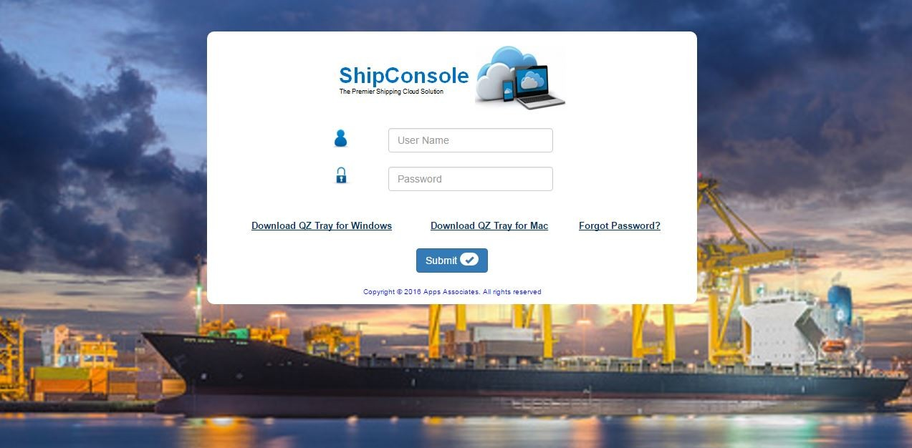
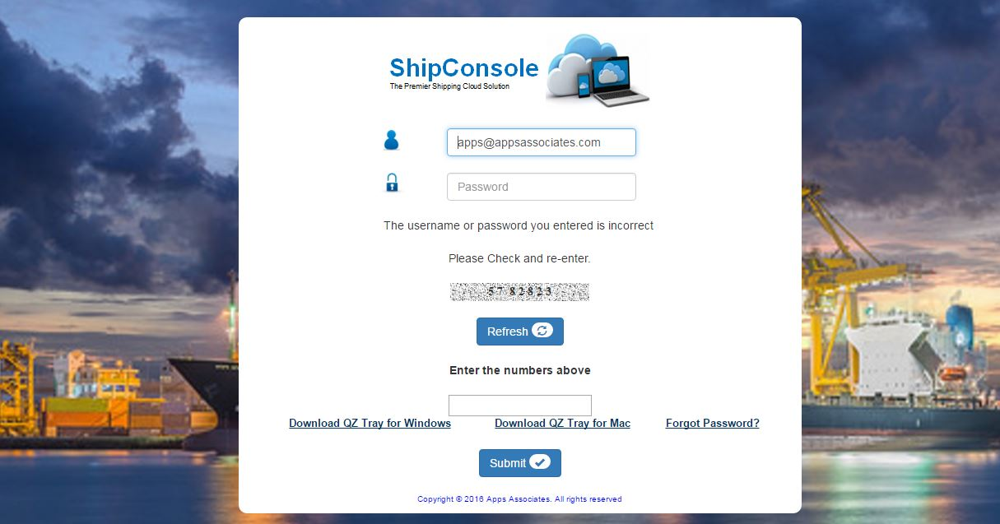
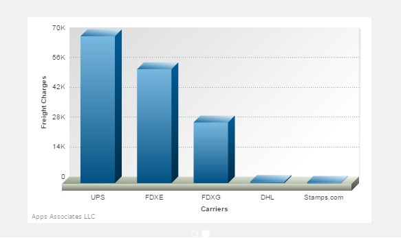

This page provides a security mechanism that prevents unauthorized users from accessing the system. In order to get into the ShipConsole Index page, the user must provide a valid username and password provided by the CLIENT ADMIN. The following screenshot shows the login page.

Figure 1.1
Input Validations:
ï?¬ Username can have combination of Characters and Numbers but Special Characters are not allowed.
ï?¬ Password can have combination of Characters, Special Characters and Numbers.
UserName : Uniquely identifies a user
Password : Confidential that is known only to its user.
Login : This button validates username and password.
Download QZ Tray for Windows : This link is used to download QZ tray for Windows OS system to use Weighing Scale and Printer
Download QZ Tray for MAC : This link is used to download QZ tray for MAC OS system to use Weighing Scale and Printer
Forgot Password : This provides password for specific user.
The Shipping user credentials are provided by the admin which are unique to specific Location. User must enter username and password, then click on Login button as shown below in Figure1.2

Figure 1.2
If user provides valid login details then it navigates to ShipConsole Index Page, Otherwise error message is displayed at the top right corner of the screen and captcha is given as shown in
Figure 1.3

Figure 1.3
If user lost password then password can be reset using Forgot Password. When clicked on Forgot Password, the following pop-up is opened Figure 1.4

Figure 1.4
 Once user name and email-id is entered, click on Get Password button. It sends the new password to the respective registered email-id and success message is displayed as shown in Figure 1.5

Figure 1.5
 After clicking Get Password button, If user name is invalid then appropriate message will be displayed at the top right corner of the screen as shown in Figure 1.6 and Figure 1.7 respectively.

Figure 1.6

Figure 1.7
 Once user enters valid login details of shipping user then user is allowed to get into ShipConsole Index screen(Figure 1.8)

Figure 1.8
Live data with the graphs is displayed on the home screen.The graph details are displayed for the client user with respective to the user location,carrier wise.
1. Pie Chart that represents number of shipments shipped for a month,carrier wise i.e, previous one month from previous day of the present month to the last month. Eg: if present date is 9 March 2016 then the graph displays the data from 8 Feb 2016 to 8 March 2016.

2. The other chart is a Bar Graph represents freight charges for a month, carrier wise i.e, previous one month from previous day of the present month to the last month. Eg: if present date is 9 March 2016 then the graph displays the data from 8 Feb 2016 to 8 March 2016.
